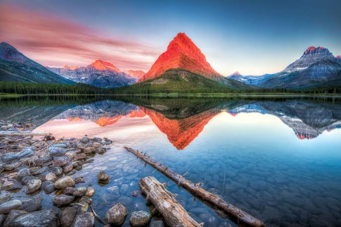

Montana ist ein Bundesstaat im Nordwesten der Vereinigten Staaten. Der Name leitet sich ab vom spanischen montaña,
dieses wiederum vom lateinischen montanus (beides dt. „Berg“, „bergig“, „gebirgig“).[2] Der Name ist auch ein Hinweis auf die Bodenschätze dieses Bundesstaates;
sein Spitzname Treasure State („Staat der Schätze“) begründet sich durch die Vielzahl an Bodenschätzen wie Erdöl, Kohle, Kupfer, Silber oder Gold, die praktisch
alle durch Bergbau gehoben werden.
Quellen- und Lizenzhinweis:
Dieser Text basiert auf dem Wikipedia-Artikel
Montana
(geänderte Fassung) und steht unter der Lizenz
Creative Commons Attribution-ShareAlike 4.0 International (CC BY-SA 4.0).
Das Bild ist von
USA Tipps